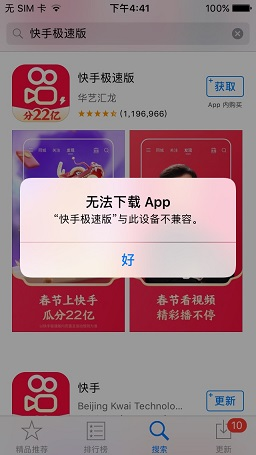
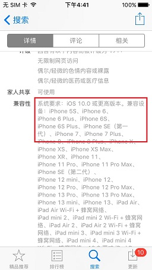
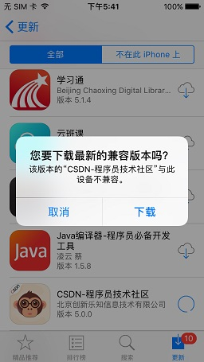
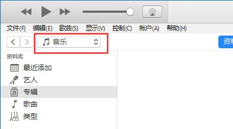
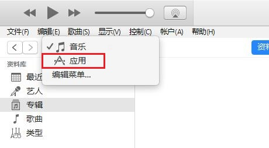

旧款苹果手机如何安装软件
一、前情提要
苹果手机在多年前，并不像现在一样平民化，可以说用得起的人少之又少，再加上那个年代科普知识的匮乏，竟然有人做出“卖肾买iPhone”的荒唐事。苹果手机在那个年代究竟是为何又如此大的吸引力呢？
为了圆儿时的梦，我在二手交易平台花几十块钱买了一台苹果5。这不禁使我想起那个卖肾买苹果的少年小王，想必如今的小王拿着手里的4S，一定会后悔当初的行为。
到货之后，我迫不及待的想要体验一下十年前发布的这款苹果手机。开机、连WIFI、下软件一气呵成，但尴尬的事来了……

于是我查看了一下详情页面。

各大常用应用竟然已经不兼容苹果5了，那就真的没办法了吗？
二、另辟蹊径
通过查询各种资料，我得知苹果应用商店的下载机制是：购买应用时需要验证兼容性，如果不符合则无法购买；账号中已购买的应用在重新下载时，如果最新版不兼容，则可选择下载“最新的兼容版本”。
那么我们的思路就是：把想要下载的应用想办法购买下来，然后在“已购项目”中下载所谓“最新的兼容版本”，就可以安装想要的应用了。
三、下载安装旧版iTunes
我找到了电脑端支持App Store的iTunes最后一个版本的安装包。
下载iTunes64Setup_12.6.5.3.exe
安装过程省略。
四、购买应用
打开iTunes，登录和手机上相同的苹果账号后，在窗口左上附近切换到“应用”。
